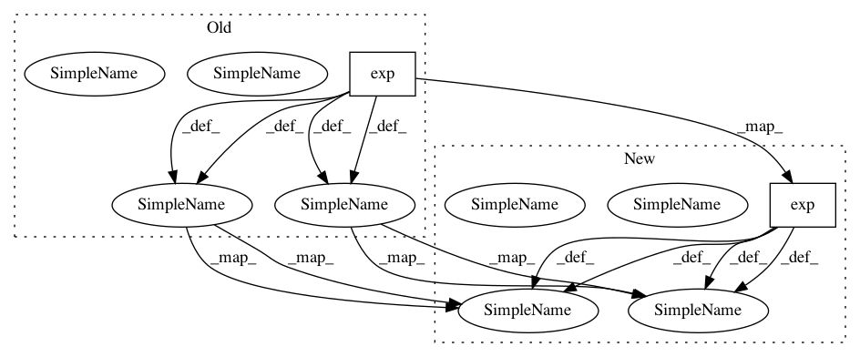

c7c95a0af7d7a2d21bc1d90194e908e5a53698f7,chainercv/links/model/yolo/yolo_v2.py,YOLOv2,_decode,#YOLOv2#,188
Before Change
raw_bbox[:, 2:] += raw_bbox[:, :2]
raw_bbox *= self.insize / self.extractor.grid
raw_score = self.xp.exp(conf[:, 1:])
raw_score /= raw_score.sum(axis=1, keepdims=True)
raw_score /= 1 + self.xp.exp(-conf[:, 0, None])
bbox = []
label = []
score = []
for l in range(self.n_fg_class):
bbox_l = raw_bbox
score_l = raw_score[:, l]
mask = score_l >= self.score_thresh
bbox_l = bbox_l[mask]
score_l = score_l[mask]
indices = utils.non_maximum_suppression(
bbox_l, self.nms_thresh, score_l)
bbox_l = bbox_l[indices]
score_l = score_l[indices]
bbox.append(cuda.to_cpu(bbox_l))
After Change
raw_bbox[:, 2:] += raw_bbox[:, :2]
raw_bbox *= self.insize / self.extractor.grid
obj = 1 / (1 + self.xp.exp(-obj))
conf = self.xp.exp(conf)
conf /= conf.sum(axis=1, keepdims=True)
raw_score = obj[:, None] * conf
bbox = []
label = []
score = []
for l in range(self.n_fg_class):
bbox_l = raw_bbox
score_l = raw_score[:, l]
mask = score_l >= self.score_thresh
bbox_l = bbox_l[mask]
score_l = score_l[mask]
indices = utils.non_maximum_suppression(
bbox_l, self.nms_thresh, score_l)
bbox_l = bbox_l[indices]
score_l = score_l[indices]
bbox.append(cuda.to_cpu(bbox_l))
In pattern: SUPERPATTERN
Frequency: 3
Non-data size: 2
Instances
Project Name: chainer/chainercv
Commit Name: c7c95a0af7d7a2d21bc1d90194e908e5a53698f7
Time: 2018-05-25
Author: Hakuyume@users.noreply.github.com
File Name: chainercv/links/model/yolo/yolo_v2.py
Class Name: YOLOv2
Method Name: _decode
Project Name: OpenNMT/OpenNMT-py
Commit Name: 4c932387a4d67189ec862e060dedc81198dea5d5
Time: 2016-11-18
Author: soumith@fb.com
File Name: word_language_model/generate.py
Class Name:
Method Name: